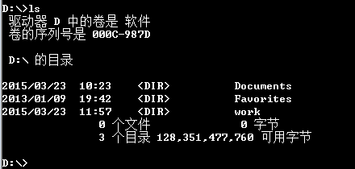
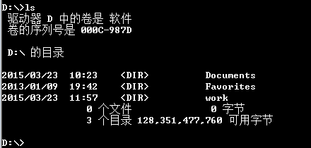

win7 ls功能
1.首先，在系统桌面新建一个“文本文档”，然后，将以下内容复制进入：
@echo off
dir
2.接下来，将该新建文档“另存为”，并命名为“ls.bat”，保存类型为“所有文件”，然后，点击“保存”按钮即可。
3.返回桌面，可以看到刚刚新建了一个批处理文件，接下来，将该批处理文件复制到，C\Windows文件夹目录中即可，这种，ls命令就可以正常使用了。

blog comments powered by Disqus
@echo off
dir
